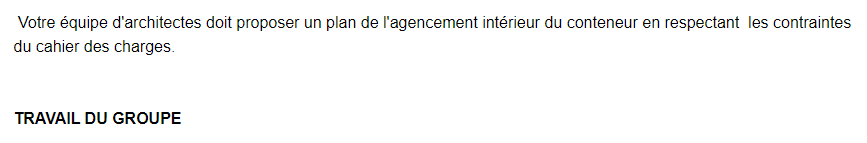
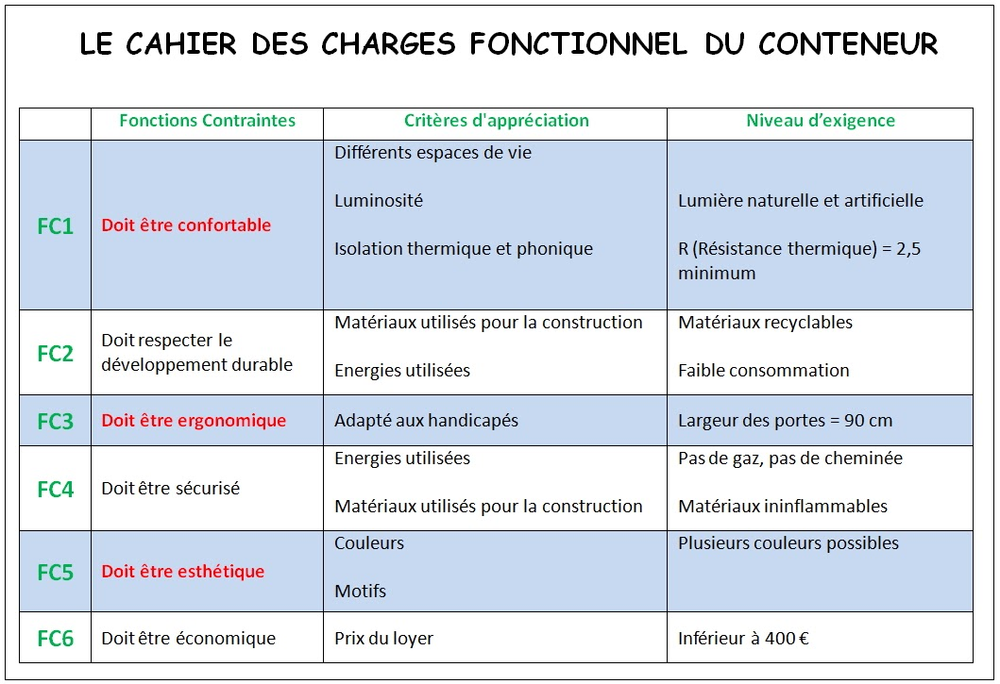
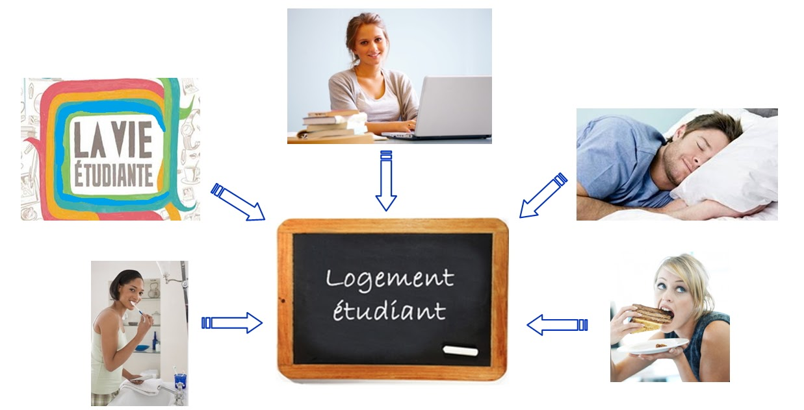

Séance 6: la modélisation du conteneur

Lancez Tinkercad en utilisant le lien envoyé via Pronote pour accéder à votre classe. Réaliser la modélisation en suivant l'échelle ci-dessus:
16 mm dans Tinkercad correspondent à 1 m en réalitée
Chaque élève dessine son propre plan en tenant compte des fonctions contraintes, particulièrement FC1, FC3 et FC5.

Pour la fonction contrainte FC1 "Doit être confortable" votre plan doit répondre aux 5 besoins de l'étudiant ci-dessous :

N.B: pour dupliquer un objet appuyez sur la touche ctrl avec la touche D en même temps.
Conseil : afin de faciliter votre travail, vous pouvez utiliser soit le document ressource sur le mobilier en effectuant les réductions, soit en utilisant les vignettes du mobilier à l'échelle.
Ajouter des éléments extérieurs dans tinkercad:
lancez le site suivant: https://free3d.com/3d-models/furniture et suivez les instructions de la vidéo ci dessous: